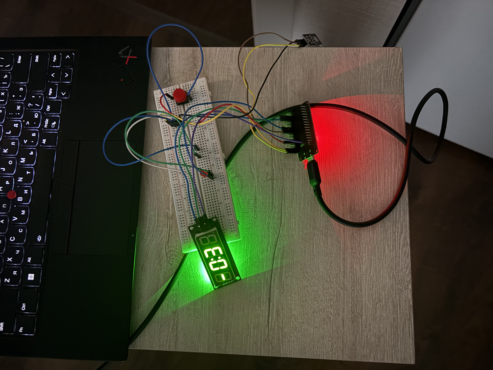

Термометр на esp32.

Начнем с того как мне пришла эта идея и вообще как я пришел к esp32 и зачем. Я закончил колледж по специальности информационные системы и программирование, у вас както не связывается а причем здесь esp32 ты же учился в колледже писать сайтики и бекенд. Да но меня это не интересовало в колледже я писал на Java, но чето както какимито путями меня заитересовал язык си и я стал его учить и сейчас пробую писать под есп. Но вы по моему недо сайту не судите какой я программист сайт если его можно так назвать был создан на работчем пк в агазине где я работаю. Знаю странные ко мне желания и решения приходят но я решил что хочу чемто нисшевым делиться и в нисшевом месте не в какомто тг и вк где все сидят а где только избранные захотят зайти ко мне на мой супер веб ап конечно в кавычках. Так о чем же мы это. Заказал я ali себе есп32 кнопочек лед резисторы и конечно без чего не мог бы наш термометр рабоать это датчик температуры DHT22. Обошлось мне это меньше 1000 рублей или почти целых 12 американских рублей. С начала я дмал смотреть видео и так учиться но потом я решил что я же учу эмбедед значит я должен пойти по хардкору в доках я смотрел и гуглил ни каких неиросетей я чет от них устал от всего этого нейрослопа и saasах не нужных если можно было сказать может от части этого я создаю это подобие веб сайта но отчасти мб скемто пообщаться конечно почту я оставлю куда мне можно написать а то мне вообще не скем общаться мб я и начал с компьютерами общаться с помощью языков программирования потому что мне больше не с кем. Ну так о чем это я че мысли утекают от моего основного повествования. И так глава 2 если это можно так я сходил на почту шла посылка дней 14-20 точно не скажу но чето около этого. По началу я с трудом и с болью в попе подключил этот есп к пк настроил если что я настраивал это в первый раз без чей либо помощи так что мамкины программисты которые говорят что вот ии бы сделало за меня так если оно может все сделать за меня чем мене заниматься но ладно. Далее я подключал по очередно лед потом кнопки и потом я подключил DHT22 как ни странно он завелся без каких либо установленных библеотек если я не прав буду рад если исправите меня и бить не будете. На фотокарточке вы возможно увидели что там есть еще tm1637 капец я запомнил его название короче этот первый монстр на которого я пытался сам писать драйвер потому что я дурень и не умею гуглить и слушаю всякую шелуху на форуме но это не важно важно что я установил этот драйвер к себе и чудо не члучилось я долго думал почему я спрашивал на форумах кидал код но все говорили норм перепроверял подключение платы и перетыкал и тд но ничего не показывалось но в логи градусы выводились пока я думал и как норм а потом через день ночью я проснулся в холодном поту от кошмара что у меня не работает этот tm1637 я четко и твердо решил что я ничего не могу и заплакал и только потом до меня дошло ну как дошло я уже от отчаинья зашел смотреть ютуб и понял ну или не понял но без открытого монитора у меня помемучто не работает эта тмка. вот я ща пишу этот пост и смотрю что у меня получаеться понимаю что криво и уродливо но зато сво родное надеюсь когданибудь я перепишу это под круд а не просто каждй пост буду делать на отдельном html но просто вреени нет у меня остаеться 15 до онца перерыва но дома я возможно подкоректирую но это не точно ну вот короче все работает. На картинке -3 вы возможно думаете что я живу в антарктиде но нет просто я тестил с помощью холодильника свое уникальное изобретение за которое мне не дадут млн баксов. Возможно я запишу видео какоето на то как я делаю этот не счасный термометр код конечно я выложу на гит в скором времени кстати в планах рзвиваться дальше в этом и допиливать это сообщество хочу сделать комментарии возможно пока анонимные. дай бог получиться. назову это часть 1 несчастный термометр и кривые руки. в планах выпустить наверное несколько частей как я это доведу до конечного устройства с корпусом и буду тестить за окном. Не знаю для кого я это пишу но путь будет такой мой небольшой деввлог. Спасибо за сочуствие и за прочтение надеюсь я все выставлю что обещал.